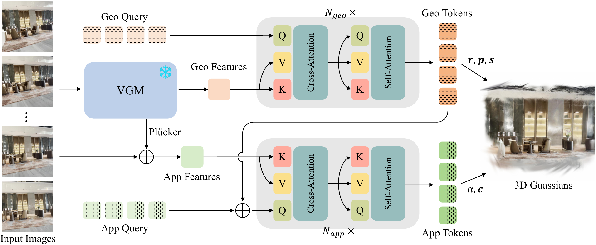

QuerySplat: Decoupling Geometry and Appearance Representations in 3DGS prediction
Gallery
Drag to orbit, right-drag to pan, scroll to zoom, and double-click to set the rotation center.
Input Images
Loading 3DGS 0%
Preparing Gallery...
Abstract
While feed-forward 3D Gaussian Splatting (3DGS) enables efficient 3D reconstruction, achieving high-fidelity rendering remains challenging. Existing pixel-aligned approaches suffer from spatial inflexibility and massive structural redundancy, whereas query-based methods lack 3D priors and entangle geometry with appearance, yielding blurry, pose-dependent results. To overcome these deficiencies, we propose QuerySplat, a feed-forward 3DGS framework driven by geometric priors and explicit appearance decoupling. Specifically, we design a dual-branch query-based decoder: the geometry branch leverages a pretrained Vision Geometric Model for spatial understanding, which intrinsically endows QuerySplat with pose-free modeling capabilities, while the appearance branch recovers high-frequency details through a dedicated pathway separated from geometric attribute regression. Extensive experiments demonstrate that QuerySplat mitigates the blurry rendering issues of early query-based models and consistently outperforms pixel-aligned approaches in rendering fidelity. On the challenging DL3DV benchmark, it achieves state-of-the-art novel view synthesis performance, with average PSNR gains of 2.30 dB and 1.04 dB over the best pose-free and pose-required baselines, respectively.
Method Overview

Video Presentation
BibTeX
@article{YourPaperKey2024,
title={Your Paper Title Here},
author={Li, Yinglong and Shen, Donghui and Zhang, Xiaoyu and Ye, Zhichao and Wu, Hongyu and Hao, Aimin and Zhang, Guofeng and Liu, Haomin},
journal={Conference/Journal Name},
year={2024},
url={https://your-domain.com/your-project-page}
}